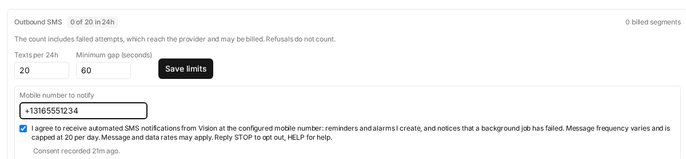

Operated by John Mosley, sole proprietor.
Vision is a self-hosted task-automation and monitoring application. Its user opts in to SMS notifications inside the application's own settings screen: he enters the mobile number to be notified and ticks a consent checkbox on the same form, next to the wording below. The number and the tick are stored together with a timestamp; unticking it withdraws consent.
The application refuses to record a consent for any number other than the one it is configured to text, so the record cannot describe a phone that would never be messaged.
I agree to receive automated SMS notifications from Vision at the configured mobile number: reminders and alarms I create, and notices that a background job has failed. Message frequency varies and is capped at 20 per day. Message and data rates may apply. Reply STOP to opt out, HELP for help.
The application's Outbound SMS settings panel: the mobile number field and the consent checkbox on the same form, so the consent is plainly for that number. The number shown here is an example — the live configuration holds the operator's own mobile, and the application never displays more than its last four digits once saved.

The application sends only to the one mobile number registered in its configuration, and it has no input field for any other number. Messages are generated by software in response to events — a reminder falling due, a background job failing — never composed by a person. Every message is prefixed with the brand name and ends with “Reply STOP to opt out.”
Reply STOP to any message, or untick the box above. STOP, STOPALL, UNSUBSCRIBE, CANCEL, END and QUIT are handled by Twilio Advanced Opt-Out; START, YES or UNSTOP re-subscribe.